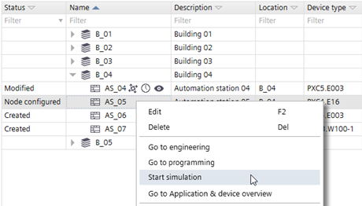
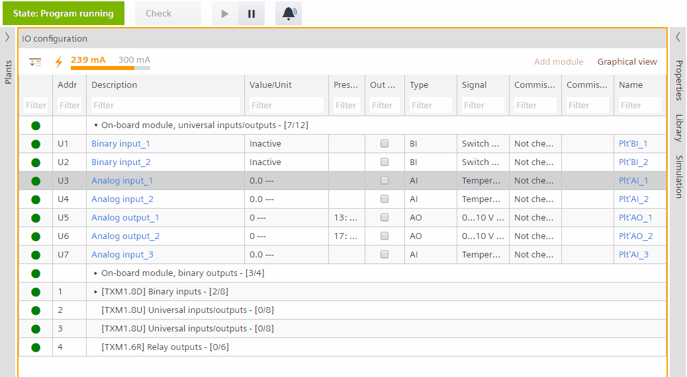
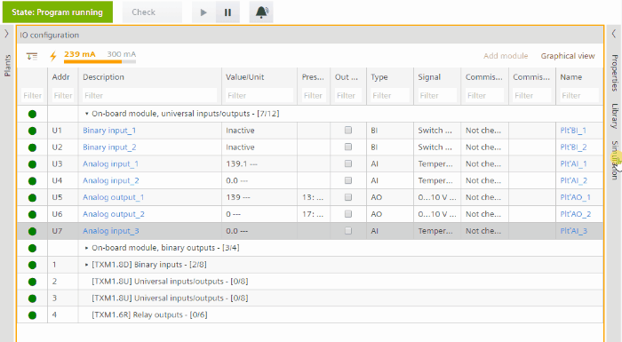
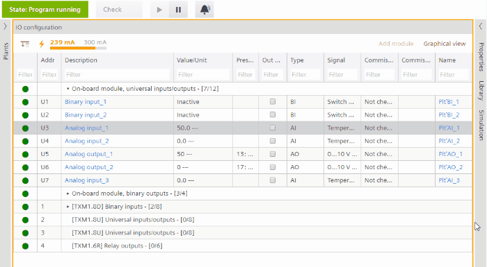
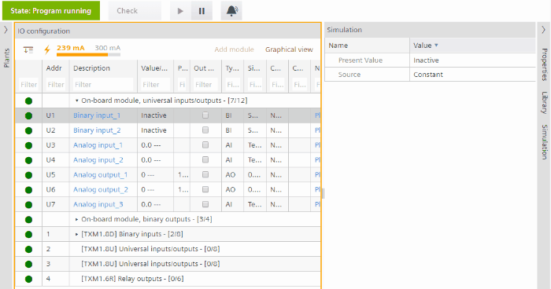
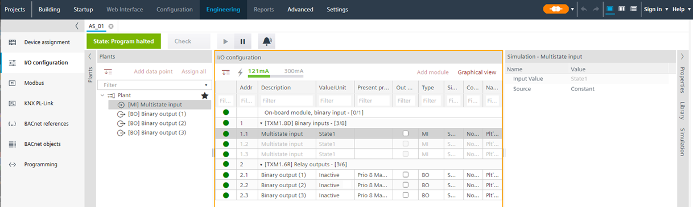
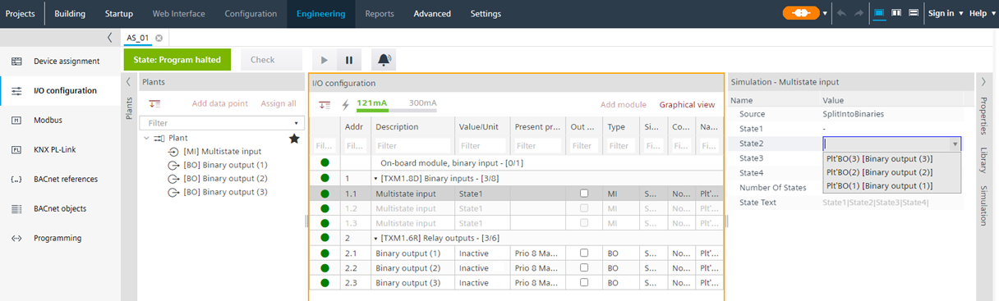
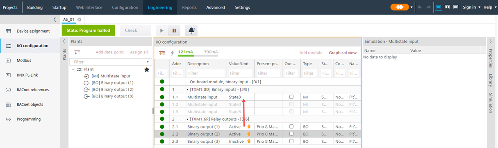

执行程序模拟
可以模拟程序来测试其逻辑工作流程。
 |
|

PXC4.E16.A 和 PXC7.E400.A 不支持工程、编程和仿真。更多信息请查看设备对应的硬件文档。
Scope of simulation
- Simulation of program code without any system hardware, field devices or racks can be performed in order to ad-hoc verify functionalities such as:
- Release/hold functions
- Sequence of operation
- Startup/shut-down functions
- Emergency functions
- Simulation works with BACnet objects. Modbus devices or other field devices cannot be simulated.
- Simulation can be performed:
- in the office without hardware installation
- on site without interfering with the running installation process.
- Simulation is possible for
- I/O editor
- Modbus editor
- Programming editor
- Web interface
- Connected BACnet clients, such as Desigo CC or Desigo Control Point
PC 仿真要求：每个器件类型（例如 PXC4/5/7）需要至少 16 个 GB RAM、SSD 和 500 个 MB 进行仿真。
Perform a program simulation
- 仅支持 IP 设备。
- 一次只能模拟一个程序。
- 设备的模拟配置一次自动保存 PauseorStop simulation被点击。再次开始模拟时，将恢复保存的值。
PauseorStop simulation被点击。再次开始模拟时，将恢复保存的值。
- 模拟中不支持固件升级。
- 如果在较长的模拟时间内没有任何活动，则模拟将在设置的自动注销延迟后停止。自动注销时间延迟可设置在 5 至 60 分钟之间。
设置 > 用户配置文件 > 用户 > [用户名] > 自动注销延迟
Users
1. Start the simulation mode
- The auto-logoff delay is set to extended simulation.
Users - A PXC4/5/7 device is added and configured in Building > Building structure.
- The certificate type on the device is set to Internal.
- Go to Building > Building structure or, alternative, go to Application & device overview.
- Right-click the device and select Start simulation.
- Go to Startup.
- Select the offline device (for which simulation is started) in Engineered devices tab.
- Select the online device in Discovered devices tab.
- The connection status changes from
 to
to  .
. - Click Assign.
- The online device will be configured with offline device data.
- Select Engineered devices tab.
- Right-click the device and select Load > Full (device may restart).
- The virtual device is ready for simulation.
- In the Engineering tab, click
 Play to perform the play operation in the I/O Configuration or Modbus editor.
Play to perform the play operation in the I/O Configuration or Modbus editor. - The device goes online.
- The Simulation tab displays on the right.
Error message:IP address xxx.xx.x.xxx already used in the network. Change the device IP address in the project.
1. 在 Windows 中，选择Control Panel\Network and Internet\Network Connections.
2. 选择ABTSimulation VPN network.
3. 右键单击并选择Properties.
4. 更改IP 地址以解决冲突。
2. Configure the simulated data point
- Select a data point.
- Go to the Simulation tab on the right.
- Configure the signal value as needed. Refer to the subchapter to the corresponding data point type.
In simulation mode, you can set or modify values. For each object type, there is a signal source: - Analog: Constant, Sine, Feedback
- Binary: Constant, Feedback, Toggle
- Multistate: Constant, Feedback, Split into binaries
Examples of program configuration

常数是一个允许输入信号（二进制输入、模拟输入、多态输入对象）设置常数值的功能。

反馈是一种允许输入信号（二进制输入、多态输入、模拟输入对象）复制给定输出信号的当前值的功能。
可用的配置属性：
Signal：针对不同信号类型具有以下功能的下拉菜单：
- Binary input (BI): All available binary outputs (BO) in the device are displayed. The BI value then becomes equal and updated constantly to match the BO value.
- Analog input (AI): All available analog outputs (AO) in the device are displayed. The AI value then becomes equal and updated constantly to match the AO value.
- Multistate input (MI): All available multistate outputs (MO) in the device are displayed. The MI value then becomes equal and updated constantly to match the MO value.

正弦波是一种允许模拟模拟输入 (AO) 信号的正弦波行为的函数。
可用的配置属性：
- Value update time shows how many steps are performed from min. to max.
- Max. value: Peak of the sine wave function. Must always be bigger than min. value.
Default = 10; max value = signal maximum.; min. value = signal minimum. - Min. value: Bottom of the sine wave function. Must always be less than max. value.
Default = 10; max value = signal maximum.; min. value = signal minimum. - Time period: Shows how much time it takes for one full cycle of the sine wave.
Time period default = 120 sec.; time period min. = 10 sec.; time period max. = 100.000 sec. - Value update time: How often the PrVal of the object is updated. Shows how many steps are performed for one full cycle of the sine signal.
Time period = 10 sec/value update time = 1 (10 values for PrVal for one cycle updated every sec.);
Time period = 10 sec./value update time = 2 (5 values for PrVal for one cycle updated every 2 sec.);
Default = 5 sec.; max. value = 1.000 sec.; min. value = 1 sec.

二进制信号是一个简单的函数，用于将二进制输入 (BO) 对象从值 0 切换到 1，反之亦然，并在两个信号之间具有可配置的延迟。
可用的配置属性：
- Interval On: determines the time the signal value is 1. Default = 10 sec.; Max. = 10.000; Min. = 0.
- Interval Off: determines the time the signal value is 0. Default = 10 sec.; Max. = 10.000; Min. = 0.
不同的二进制输出 (BO) 信号模拟多态输入 (MI)。
- Simulation mode is active.
- Configuration is setup with a multistate input and the number of binary outputs.

- Select the multistate input data point.
- Select the Simulation tab.
- From the Source drop-down list, select SplitintoBinaries.
- From the State1 drop-down list, select the corresponding binary output.

- Enter the data for state 2-n.
- In the Value/Unit column, select a binary output.
- From the binary output drop-down list, select Active.
- The override icon displays.
- The status of the multistate input changes in the Value/Unit column.

3. Test the application
- Go to the Programming editor and click on Play to perform the play operation.
- Verify the program functionality (e.g., sequence of operation)
- In case a program change is needed:
a. ClickPause.
b. Modify the application functionality.
c. ClickPlay again.
d. Verify the program changes. - Click Pause and go back to Building > Building structure.
- Right-click the device and select Stop simulation.
Use connected BACnet clients
要使用连接的 BACnet 客户端进行模拟，您必须向网络添加单独的 IP 地址。
- In Windows:
- Go to Settings > Network & Internet.
- Right-click the network adapter.
- Click Properties > IP settings.
- Select Internet Protocol Version 4 (TCP/IPv4).
- Click Properties and enter an IP address.
仿真结束后，需要对目标硬件进行满载。
如果使用 VMware 或 Hyper-V 等虚拟环境进行模拟，则 ABT 站点和所有客户端必须包含在同一 VMware 映像中。
不建议在虚拟环境中进行模拟。